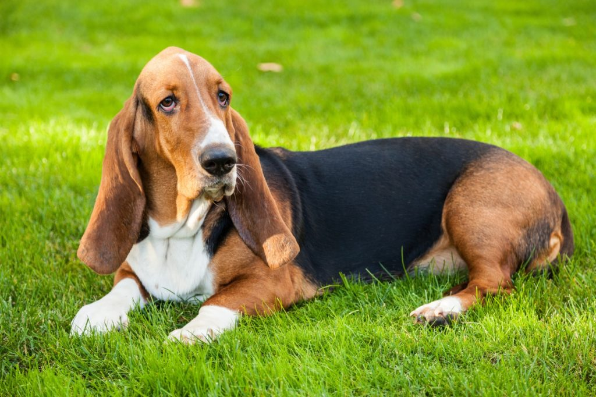

Este simpático peludo se llama David**, aunque entre nosotros le decimos “el testarudo David”, porque tiene una personalidad encantadora y muy especial. Es un perrito ideal para cualquier familia: juguetón, sociable y con un corazón enorme que no duda en abrir a cualquiera que se le acerque. David es de esos perritos que sacan sonrisas sin esfuerzo. Tiene una forma divertida de caminar, y más de una vez se ha tropezado con sus propias orejas, lo que lo hace aún más adorable. Y sus ojitos, siempre un poco dormilones, se vuelven irresistibles cuando se sienta frente a ti, pidiéndote comida con esa mirada que derrite. A pesar de su ternura y su alegría, la vida no siempre ha sido justa con él. Sus antiguos dueños lo dejaron en un albergue, pero este bonito jamás perdió su chispa. Sigue siendo un perrito feliz, lleno de energía, que solo quiere jugar, recibir caricias y compartir su alegría con quien le abra las puertas de su hogar. David es noble, divertido y leal. No guarda rencor, solo esperanza. Esperanza de encontrar por fin una familia que le dé el cariño que merece y que disfrute con él de todos esos pequeños momentos que hacen la vida más bonita. Si estás buscando un compañero fiel, dulce y con una personalidad encantadora, David está esperando por ti. Ayúdale a escribir un nuevo capítulo en su historia, esta vez lleno de amor.
